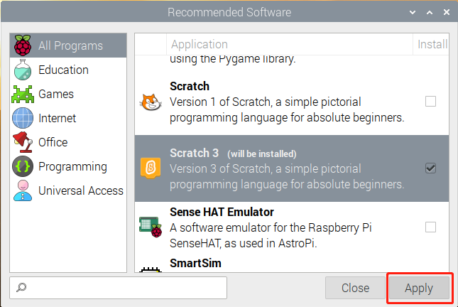
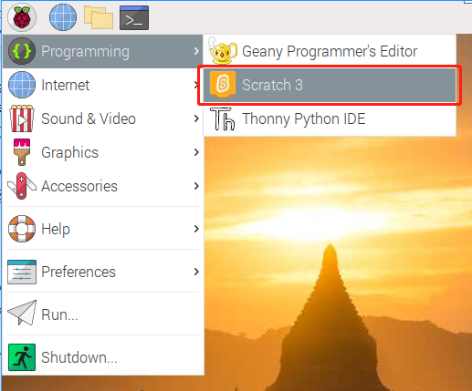
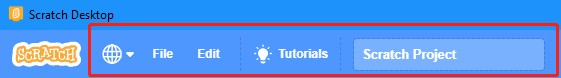
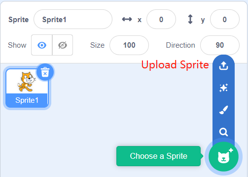

Note
Bonjour et bienvenue dans la communauté SunFounder Raspberry Pi & Arduino & ESP32 Enthusiasts sur Facebook ! Plongez plus profondément dans l’univers de Raspberry Pi, Arduino et ESP32 avec d’autres passionnés.
Pourquoi nous rejoindre ?
Support d’experts : Résolvez vos problèmes après-vente et vos défis techniques avec l’aide de notre communauté et de notre équipe.
Apprenez et partagez : Échangez des astuces et des tutoriels pour améliorer vos compétences.
Aperçus exclusifs : Accédez en avant-première aux annonces de nouveaux produits et aux avant-premières.
Réductions exclusives : Profitez de réductions exclusives sur nos derniers produits.
Promotions festives et cadeaux : Participez à des promotions et à des cadeaux lors des fêtes.
üëâ Pr√™t √† explorer et cr√©er avec nous ? Cliquez sur [Ici] et rejoignez-nous d√®s aujourd‚Äôhui !
Guide rapide sur Scratch
Note
Lors de la programmation avec Scratch 3, il est recommandé d’utiliser un écran pour une meilleure expérience. Bien entendu, si vous n’avez pas d’écran, vous pouvez également utiliser VNC pour accéder à distance au bureau du Raspberry Pi. Pour un tutoriel détaillé, veuillez vous référer à VNC.
De plus, Scratch 3 nécessite au moins 1 Go de RAM pour fonctionner, et nous recommandons un Raspberry Pi 4 avec au moins 2 Go de RAM. Bien que vous puissiez utiliser Scratch 3 sur un Raspberry Pi 2, 3, 3B+ ou un Raspberry Pi 4 avec 1 Go de RAM, les performances seront réduites, et selon les logiciels que vous faites tourner en parallèle, Scratch 3 pourrait ne pas démarrer par manque de mémoire.
Installer Scratch 3
Lors de l’installation de Raspberry Pi OS (Installer le Système d’Exploitation), il est nécessaire de choisir la version avec bureau, soit la version avec seulement le bureau, soit celle avec bureau et logiciels recommandés.
Si vous installez la version avec logiciels recommandés, vous trouverez Scratch 3 dans le menu du système sous Programmation.
Si vous avez installé uniquement la version avec bureau, vous devrez installer Scratch 3 manuellement, comme décrit ci-dessous.
Ouvrez le menu, cliquez sur Préférences -> Logiciels recommandés.

Trouvez Scratch 3 et cochez-le, puis cliquez sur Appliquer et attendez la fin de l’installation.
Une fois l’installation terminée, vous devriez le voir apparaître dans le menu Programmation.
À propos de l’interface de Scratch 3
Scratch 3 est conçu pour être amusant, éducatif et facile à apprendre. Il propose des outils pour créer des histoires interactives, des jeux, de l’art, des simulations et bien plus, en utilisant la programmation par blocs. Scratch dispose également d’un éditeur de peinture et d’un éditeur sonore intégrés.
Le haut de l’interface de Scratch 3 présente quelques options de base : la première de gauche à droite est l’option de langue, vous pouvez choisir différentes langues pour programmer. La deuxième est l’option Fichier, où vous pouvez créer de nouveaux fichiers, ouvrir des fichiers locaux et enregistrer les fichiers en cours. La troisième est l’option Édition, qui vous permet d’annuler certaines suppressions et d’activer le mode accélération (dans lequel le mouvement des sprites devient particulièrement rapide). La quatrième est l’option Tutoriels, qui vous permet de consulter des tutoriels pour certains projets. La cinquième est l’option de nommage de fichier, où vous pouvez renommer le projet.
Code
L’interface comporte trois sections principales : une zone de scène, une palette de blocs et une zone de codage. Programmez en cliquant et en faisant glisser les blocs de la palette vers la zone de codage, et vos résultats s’afficheront dans la zone de scène.

Voici la zone des sprites de Scratch 3. Au-dessus de cette zone se trouvent les paramètres de base des sprites. Vous pouvez ajouter des sprites intégrés dans Scratch 3 ou téléverser des sprites locaux.
Voici la zone de décors de Scratch 3, qui vous permet d’ajouter un arrière-plan adapté pour votre scène. Vous pouvez ajouter un décor intégré ou téléverser un décor local.

Voici un bouton Ajouter une extension.

Dans Scratch 3, vous pouvez ajouter toutes sortes d’extensions utiles. Prenons l’exemple de Détection vidéo et cliquez dessus.

Vous verrez alors cette extension dans la palette de blocs et pourrez utiliser les fonctions associées. Si une caméra est connectée, l’image de la caméra apparaîtra dans la zone de scène.

Costumes
Cliquez sur l’option Costumes en haut à gauche pour entrer dans la palette de costumes. Différents costumes permettent aux sprites d’avoir différents mouvements statiques, et lorsque ces mouvements sont assemblés, ils forment une animation dynamique cohérente.

Sons
Vous pourriez avoir besoin de clips musicaux pour rendre vos projets plus intéressants. Cliquez sur l’option Sons en haut à gauche pour éditer le son actuel ou en sélectionner/téléverser un nouveau.